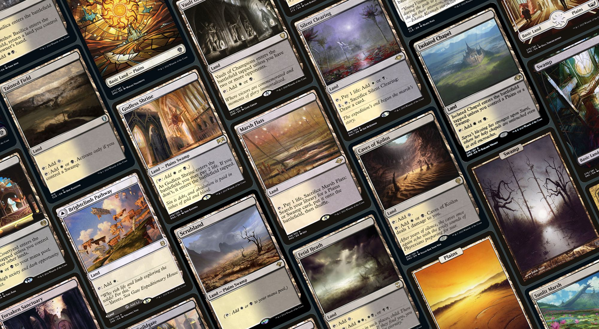
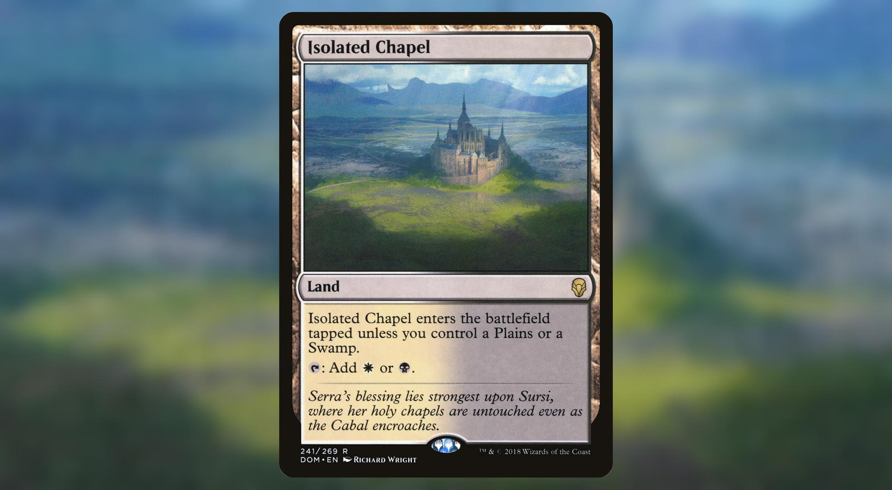
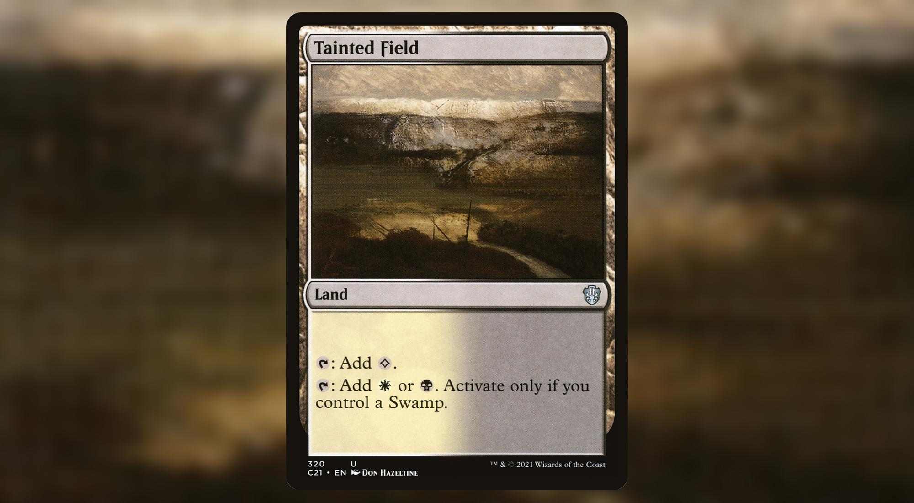
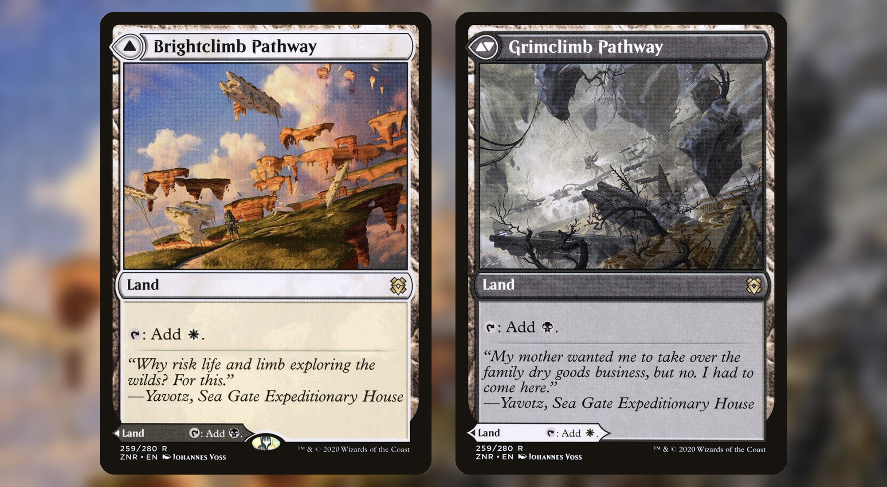
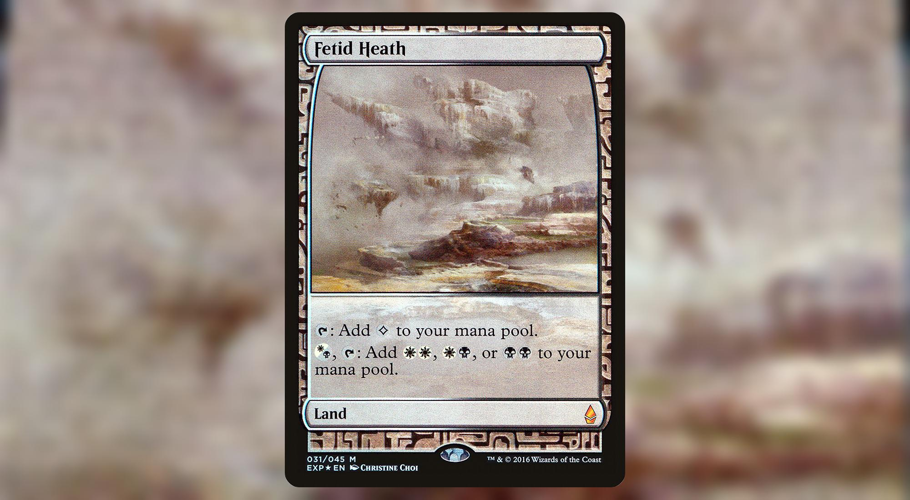
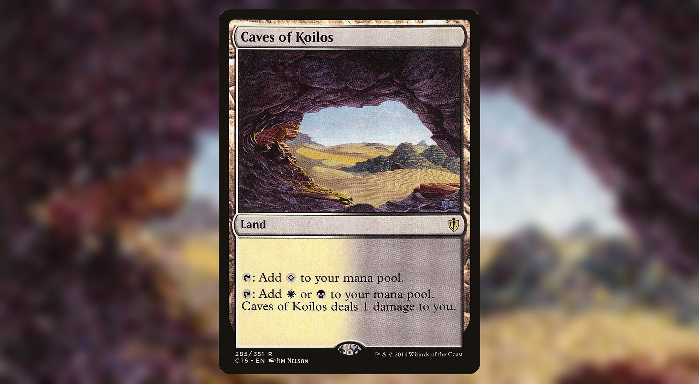
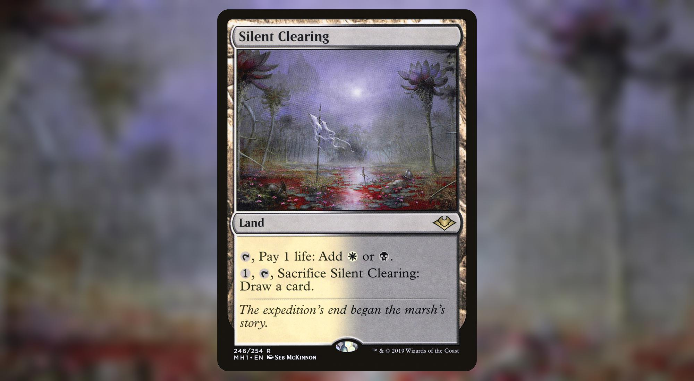
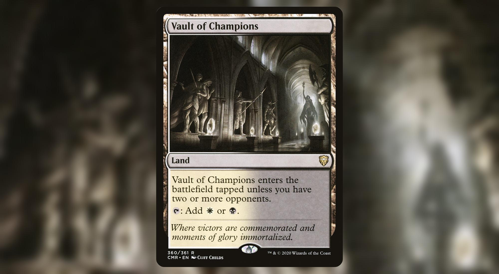
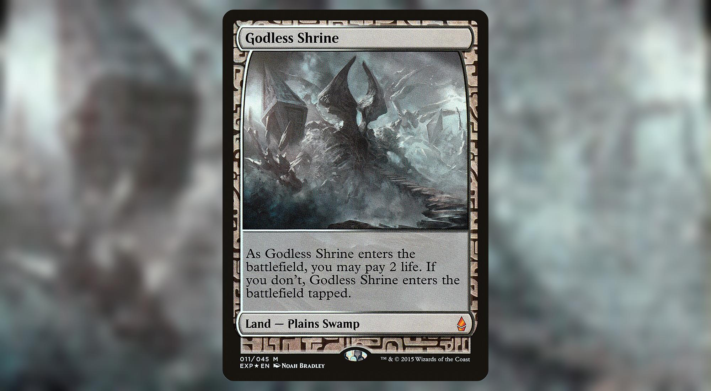
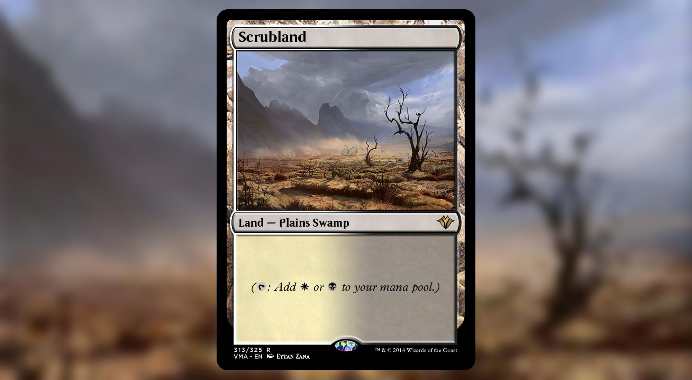

Best Orzhov lands
Top 10 mana fixing Orzhov lands for your Commander deck
Building a 2 colors Commander deck is always tricky. Compared to the other configurations (1 color and 3+ colors), 2 colors decks have less ways of fixing their manabase than other combinations.
That's why it's particularly important to know what your options are if you want to make the most out of your manabase.
10. Isolated Chapel

Will fix your mana if you keep a hand with either a Plains, a Swamp or a fetch land to get one or the other.
9. Tainted Field

Will shine more in decks relying heavily on Black. Will provide colorless mana in the meantime.
8. Brightclimb Pathway // Grimclimb Pathway

Doesn't really fix your mana but at least you get to choose your color.
7. Fetid Heath

Instant speed fixing for both of your colors if you happen to already have one of those two colors. Provides you colorless mana in the meantime.
6. Caves of Koilos

Instant speed fixing for your deck with a 1 life drawback each time. Won't hurt you if you don't need the colored mana.
5. Silent Clearing

Instant speed fixing for your deck with a 1 life drawback each time. Can replace itself if you are desperate to draw a card.
4. Vault of Champions

No drawback in a Commander game other than not being fetchable.
3. Godless Shrine

Almost as good as it's older brother, Scrubland.
Prefered target when cracking a Marsh Flats if you have no relevant play to follow with.
2. Scrubland

The king of dual lands: Perfect, no drawback, no tempo loss.
I only ranked Marsh Flats higher because of the amazing flexibility.
1. Marsh Flats

This is the perfect land for your Orzhov Commander deck.
It's a Plains when you need it. It's a Swamp when you need it. If your budget allows it, it can be a Scrubland at instant speed. If you have nothing else to play, it can be a Godless Shrine that enters the battlefield tapped.
You should always wait until the last minute to crack your fetch land: if you need to play Swords to Plowshares at instant speed or a Vampiric Tutor at the end of your opponent's turn, just go fetch a Scrubland, otherwise, at the end of your opponent's turn, go fetch a Godless Shrine and let it enter the battlefield tapped.
Cracking a fetch land and shuffling your library is also what makes it so good. If for whatever reason, you're not happy with your scry, or the cards you put back on top of your library with a Scroll Rack, you can get rid of them by cracking the Marsh Flats.
Fetch lands are also good targets for recursion spells or abilities like Brought Back, Sevinne's Reclamation or Sun Titan.
You can also double your fetch land activations with cards like Rings of Brighthearth.